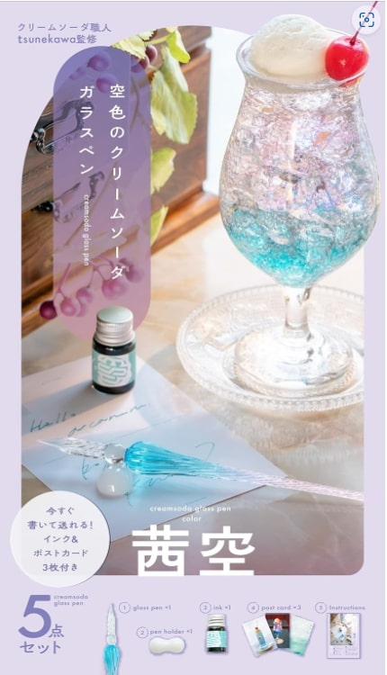
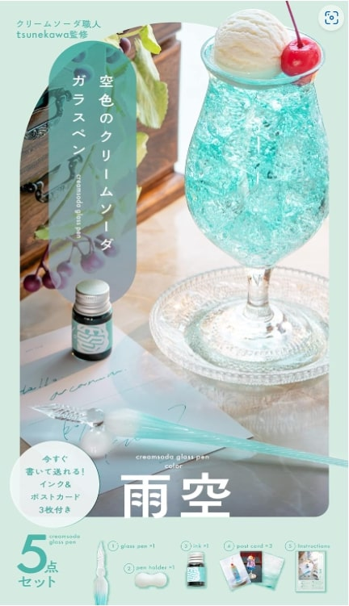
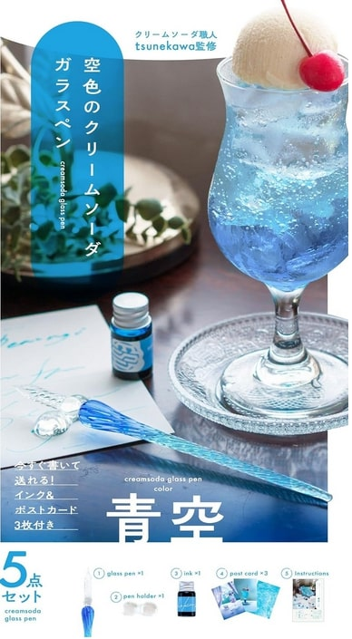
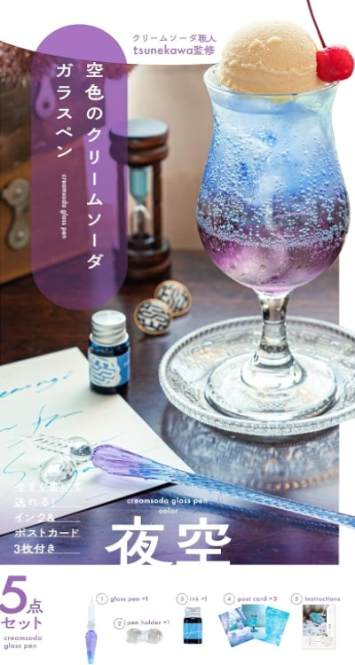

クリームソーダシリーズ
100円ショップで買えるガラスペン
本格的なガラスペン
インクや紙について
トップへ
おしゃれ！クリームソーダのガラスペン
X(旧Twitter)フォロワー数18万人を抱える
クリームソーダ職人tsunekawaさん監修のガラスペン。
ペン本体、インク、ペン置き、ポストカード、説明書までついた
豪華なセットになっています。
おしゃれなのはもちろんのこと、すぐに書き始められるので、
初めての人にもおすすめのガラスペンです🌸

「茜空」のガラスペンは
夜に染まりゆく
薄明の空のクリームソーダを
イメージした ブルーから
ピンクのグラデーション。

「雨空」のガラスペンは
淑やかに降り注ぐ
雨の日のクリームソーダを
イメージした 白から
青緑色のグラデーション。

「青空」のガラスペンは
晴れわたる空色の
クリームソーダをイメージした
青から水色の
グラデーション。

「夜空」のガラスペンは
深まる夜色の
クリームソーダをイメージした
紫から藍色の
グラデーション。